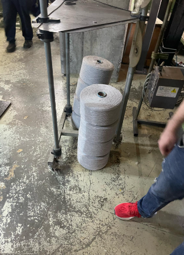
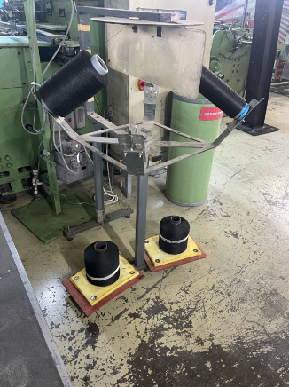

Üretim alanında gereksiz malzeme, tanımsız alanlar ve erişimi kapanan güvenlik ekipmanları vardı; düzen kişiye bağlıydı.
5S adımları bölüm çalışanlarıyla birlikte sahada uygulandı; her iyileştirme önce/sonra fotoğraflı formla kayda alındı.
Alanlar tanımlı, güvenlik ekipmanlarının önü açık; düzen 25 soruluk denetim formuyla ölçülüyor.
Mevcut durum
Düzen ve temizlik, ortak bir standarda değil kişilerin alışkanlığına bağlıydı.
Gereksiz malzeme
Kullanılmayan parça, ekipman ve kişisel eşyalar çalışma alanlarında yer kaplıyordu.
Tanımsız alanlar
Malzeme, ekipman ve atık için belirlenmiş yer yoktu; aranan şey zaman kaybettiriyordu.
Güvenlik riski
Bazı yangın tüplerinin ve ilk yardım dolabının önü kapalıydı; tehlikeli bölgeler işaretli değildi.
Analiz ve bulgular
Bölüm sahada (Gemba) gezilerek her sorun noktası fotoğraflandı ve 5S adımlarına göre sınıflandırıldı.
Ayıkla
En yaygın sorun gereksiz malzemeydi; neredeyse her noktada önce ayıklama gerekti.
Düzenle
Alan tanımlaması ve etiketleme eksikliği, aramaya ve yanlış yere koymaya neden oluyordu.
Güvenlik
İyileştirme noktalarının bir kısmı doğrudan iş sağlığı ve güvenliğiyle ilgiliydi.
Uygulanan çözüm
5S, bölüm çalışanlarıyla birlikte uygulandı; her çalışma standart bir formla belgelendi.
Önce/sonra formu
Her iyileştirme; uygulanan yöntem, uygulama sayısı ve önce/sonra fotoğrafıyla kayda alındı.
Alan tanımlama
Malzeme, ekipman, atık ve bekleme alanları zemin çizgisi ve etiketle belirlendi; makine etiketleri tek formata getirildi.
Güvenlik düzenlemesi
Yangın tüpü ve ilk yardım dolabı önleri açıldı ve işaretlendi; erişilmemesi gereken tesisat kırmızı alan ve çitle ayrıldı.
Sürdürme
Beş adım ve 25 sorudan oluşan 5S denetim formu hazırlandı; alanlar 1-5 ölçeğiyle düzenli puanlanıyor.


Sonuçlar
Düzen kişiye değil standarda bağlandı; alan ölçülebilir ve denetlenebilir hale geldi.
İşletmeye katma değer
Arama zamanı azalır
Her şeyin tanımlı bir yeri var; malzeme ve ekipman aranmıyor.
Daha güvenli alan
Güvenlik ekipmanına erişim açık, tehlikeli bölgeler ayrılmış.
Sahiplenme
İyileştirmeler bölüm çalışanlarıyla birlikte yapıldı; düzen ortak sorumluluk oldu.
Sürdürülebilir düzen
Denetim formu, kazanılan düzenin zamanla bozulmasını önlüyor.